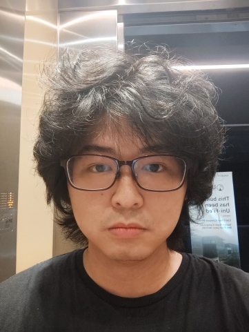

|
Wei-Cheng Lee
|
 |
Division of Computer, Electrical, and Mathematical Sciences and Engineering
King Abdullah University of Science and Technology
Email: weicheng.frank.lee@gmail.com
I am a first year PhD student in Computer Science at KAUST, advised by Prof. Francesco Orabona. I work on reinforcement learning theory, online learning, and optimization.
Before joining KAUST, I worked with Prof. Chi-Jen Lu at Academia Sinica and Prof. Shou-De Lin at National Taiwan University.
I am seeking 2027 research internships and collaborations in RL and optimization theory. I am especially interested in projects where rigorous finite-time analysis, executable artifacts, and sharp research conversations inform each other.
Publications and CV | Research Notebook
|
Research Direction
I like problems where the clean theorem is close to an algorithm someone can actually inspect. My current work studies temporal-difference learning, stochastic approximation, adaptive online learning, and lower bounds for stochastic optimization.
The short version: I try to turn messy learning dynamics into statements that are both mathematically defensible and experimentally checkable.
Selected Signals
COLT 2026: finite-time analysis for unprojected linear TD(0) with Polyak-Ruppert averaging. COLT 2025: lower bounds for stochastic non-convex optimization through divergence composition. Engineering proof: Python, JAX, PyTorch, C/C++, and numerical optimization tooling.
Profiles
Google Scholar, GitHub, OpenReview, DBLP, and LinkedIn links will be added here once the canonical URLs are finalized.
Notes
“We must know. We will know.”
-David Hilbert
“Nature, to be commanded, must be obeyed.”
-Francis Bacon
|